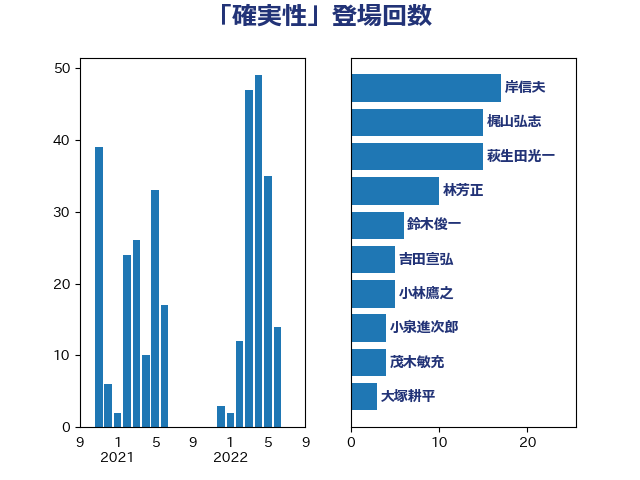

単語「確実性」

| 岸信夫 | 自由民主党 | 17 回 |
| 梶山弘志 | 自由民主党 | 15 回 |
| 萩生田光一 | 自由民主党 | 15 回 |
| 林芳正 | 自由民主党 | 10 回 |
| 鈴木俊一 | 自由民主党 | 6 回 |
| 吉田宣弘 | 公明党 | 5 回 |
| 小林鷹之 | 自由民主党 | 5 回 |
| 小泉進次郎 | 自由民主党 | 4 回 |
| 茂木敏充 | 自由民主党 | 4 回 |
| 大塚耕平 | 国民民主党 | 3 回 |
| 岸田文雄 | 自由民主党 | 3 回 |
| 柴田巧 | 日本維新の会 | 3 回 |
| 武田良太 | 自由民主党 | 3 回 |
| 細田健一 | 自由民主党 | 3 回 |
| 緑川貴士 | 立憲民主党 | 3 回 |
| 麻生太郎 | 自由民主党 | 3 回 |
| 伊波洋一 | 無所属 | 2 回 |
| 大西英男 | 自由民主党 | 2 回 |
| 小山展弘 | 立憲民主党 | 2 回 |
| 山谷えり子 | 自由民主党 | 2 回 |
| 掘井健智 | 日本維新の会 | 2 回 |
| 斉藤鉄夫 | 公明党 | 2 回 |
| 末松信介 | 自由民主党 | 2 回 |
| 本田顕子 | 自由民主党 | 2 回 |
| 津島淳 | 自由民主党 | 2 回 |
| 浜野喜史 | 国民民主党 | 2 回 |
| 神津たけし | 立憲民主党 | 2 回 |
| 竹谷とし子 | 公明党 | 2 回 |
| 藤田文武 | 日本維新の会 | 2 回 |
| 赤嶺政賢 | 日本共産党 | 2 回 |
| 長妻昭 | 立憲民主党 | 2 回 |
| 音喜多駿 | 日本維新の会 | 2 回 |
| 鬼木誠 | 立憲民主党 | 2 回 |
| あべ俊子 | 自由民主党 | 1 回 |
| ながえ孝子 | 無所属 | 1 回 |
| 上川陽子 | 自由民主党 | 1 回 |
| 上杉謙太郎 | 自由民主党 | 1 回 |
| 中川宏昌 | 公明党 | 1 回 |
| 中村裕之 | 自由民主党 | 1 回 |
| 中西健治 | 自由民主党 | 1 回 |
| 中谷真一 | 自由民主党 | 1 回 |
| 加藤鮎子 | 自由民主党 | 1 回 |
| 古川禎久 | 自由民主党 | 1 回 |
| 吉川ゆうみ | 自由民主党 | 1 回 |
| 吉田久美子 | 公明党 | 1 回 |
| 国光あやの | 自由民主党 | 1 回 |
| 國場幸之助 | 自由民主党 | 1 回 |
| 城井崇 | 立憲民主党 | 1 回 |
| 大家敏志 | 自由民主党 | 1 回 |
| 大石あきこ | れいわ新選組 | 1 回 |
| 安江伸夫 | 公明党 | 1 回 |
| 室井邦彦 | 日本維新の会 | 1 回 |
| 寺田静 | 無所属 | 1 回 |
| 小沼巧 | 立憲民主党 | 1 回 |
| 尾身朝子 | 自由民主党 | 1 回 |
| 山際大志郎 | 自由民主党 | 1 回 |
| 岩渕友 | 日本共産党 | 1 回 |
| 岩田和親 | 自由民主党 | 1 回 |
| 島尻安伊子 | 自由民主党 | 1 回 |
| 平木大作 | 公明党 | 1 回 |
| 後藤茂之 | 自由民主党 | 1 回 |
| 徳永エリ | 立憲民主党 | 1 回 |
| 徳永久志 | 立憲民主党 | 1 回 |
| 早稲田ゆき | 立憲民主党 | 1 回 |
| 有村治子 | 自由民主党 | 1 回 |
| 木原誠二 | 自由民主党 | 1 回 |
| 本田太郎 | 自由民主党 | 1 回 |
| 松川るい | 自由民主党 | 1 回 |
| 松野博一 | 自由民主党 | 1 回 |
| 武井俊輔 | 自由民主党 | 1 回 |
| 沢田良 | 日本維新の会 | 1 回 |
| 河野義博 | 公明党 | 1 回 |
| 浜地雅一 | 公明党 | 1 回 |
| 牧山ひろえ | 立憲民主党 | 1 回 |
| 牧島かれん | 自由民主党 | 1 回 |
| 田村まみ | 国民民主党 | 1 回 |
| 田村憲久 | 自由民主党 | 1 回 |
| 石川昭政 | 自由民主党 | 1 回 |
| 神田憲次 | 自由民主党 | 1 回 |
| 秋野公造 | 公明党 | 1 回 |
| 美延映夫 | 日本維新の会 | 1 回 |
| 羽田次郎 | 立憲民主党 | 1 回 |
| 菅義偉 | 自由民主党 | 1 回 |
| 藤木眞也 | 自由民主党 | 1 回 |
| 角田秀穂 | 公明党 | 1 回 |
| 里見隆治 | 公明党 | 1 回 |
| 金子恭之 | 自由民主党 | 1 回 |
| 鈴木憲和 | 自由民主党 | 1 回 |
| 鈴木隼人 | 自由民主党 | 1 回 |
| 関芳弘 | 自由民主党 | 1 回 |
| 阿部知子 | 立憲民主党 | 1 回 |
| 青木愛 | 立憲民主党 | 1 回 |
| 青柳仁士 | 日本維新の会 | 1 回 |
| 須藤元気 | 無所属 | 1 回 |